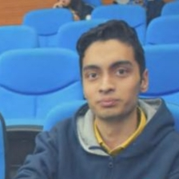

Parth is a student of Integrated programme in Managemgemnt (IPM) at Indian Insititute of Management, Rohtak. He is currently in the third academic year of his five year course. He has varying interests from philosophy to cooking and from geopolitics to memeing. He is a native of Delhi and currently resides in the capital. He is yet to develop an area of expertise and gain any major achievement. Only feather in his cap is that he is one of those rare individuals who sleeps after getting tired from sleeping.

Expectations are destined to perish.
Lord Krishna, The Mahabharat
About Me
- Interests
- Psychological literature
- Human sexuality
- Political propoganda
- Hobbies
- Feeling Depressed
- Overthinking
- Career Goals
- None